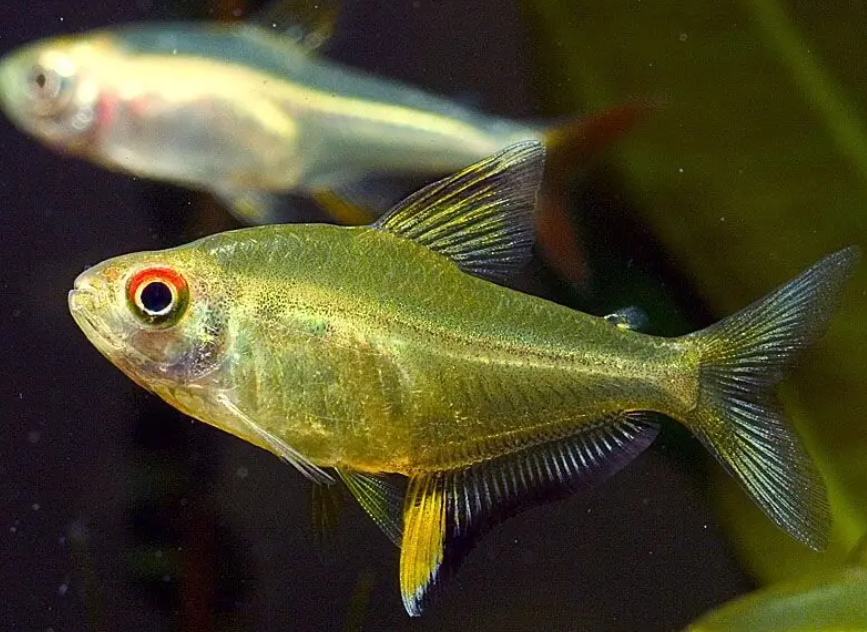

Systématique
- Ordre : Characiformes
- Famille : Characidae
- Genre : Hyphessobrycon
- Espèce : H. pulchripinnis

Hyphessobrycon pulchripinnis, communément appelé Tétra citron, est un petit characidé très apprécié en aquariophilie pour sa couleur jaune délicate et son tempérament paisible.
Il mesure adulte entre 3,5 et 4,5 cm. Son corps comprimé et légèrement translucide arbore une coloration jaune citron, plus intense chez les mâles dominants et les spécimens bien acclimatés. Les nageoires dorsale et anale sont bordées d'un liseré noir contrastant avec le jaune vif (d'où son nom latin pulchripinnis signifiant "belles nageoires"). Le haut de l'œil est marqué d'un arc rouge brillant.
C'est un poisson robuste, idéal pour les aquariums communautaires amazoniens, qui révèle toutes ses couleurs dans un environnement planté et légèrement tamisé.
C'est un poisson grégaire qui doit vivre en banc d'au moins 8 à 10 individus. En groupe, les mâles paradent en déployant leurs nageoires pour établir une hiérarchie sans violence, ce qui ravive leurs couleurs.
Très pacifique et actif, il occupe la zone médiane de l'aquarium. Il cohabite parfaitement avec d'autres tétras, des Corydoras, des Apistogramma ou des petits Loricariidés.
Mode : ovipare.
La reproduction est possible en captivité. C'est un diffuseur d'œufs : le couple pond en pleine eau ou au-dessus de plantes à feuilles fines (comme la mousse de Java). Les œufs non adhésifs tombent au sol.
Il n'y a pas de soins parentaux et les adultes mangent leurs œufs s'ils ne sont pas retirés. Les alevins sont très petits et nécessitent des infusoires ou du plancton de mare au démarrage.
Dimorphisme sexuel : Le mâle est généralement plus coloré, avec une bordure noire plus large et plus marquée sur la nageoire anale. La femelle est plus ronde, surtout en période de frai, et un peu plus terne.
Espérance de vie : Environ 3 à 5 ans en aquarium.
Il est endémique du bassin de l'Amazone au Brésil, plus précisément dans le bassin de la rivière Tapajós. Il fréquente les petits affluents forestiers et les zones à courant lent, riches en végétation et en racines immergées.
Répartition

Origine naturelle :
- Amérique du Sud.
- Brésil (bassin du Rio Tapajós).
Paramètres de maintenance
Température : 23 à 28 °C.
pH : 5,5 à 7,5 (tolérant, mais préfère l'eau légèrement acide).
GH : 3 à 15 °dGH (eau douce à moyennement dure).
Courant : Faible à modéré.
Volume conseillé : Minimum 60 à 80 L pour accueillir confortablement un banc d'une dizaine d'individus et leur permettre de nager.
Régime alimentaire
Régime : omnivore à tendance insectivore.
Dans la nature, il se nourrit de petits invertébrés, de crustacés et de vers.
En aquarium, il accepte tout : paillettes, petits granulés. Pour maintenir sa coloration jaune intense et sa santé, un apport régulier de nourriture vivante ou congelée (artémias, daphnies) est fortement recommandé.